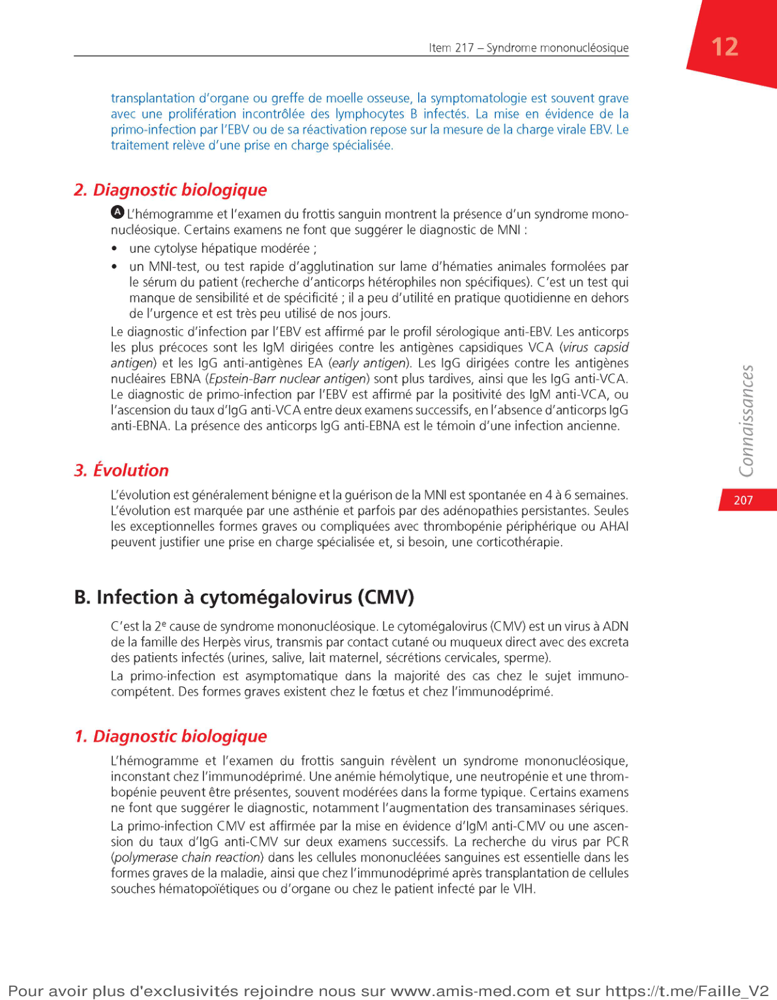
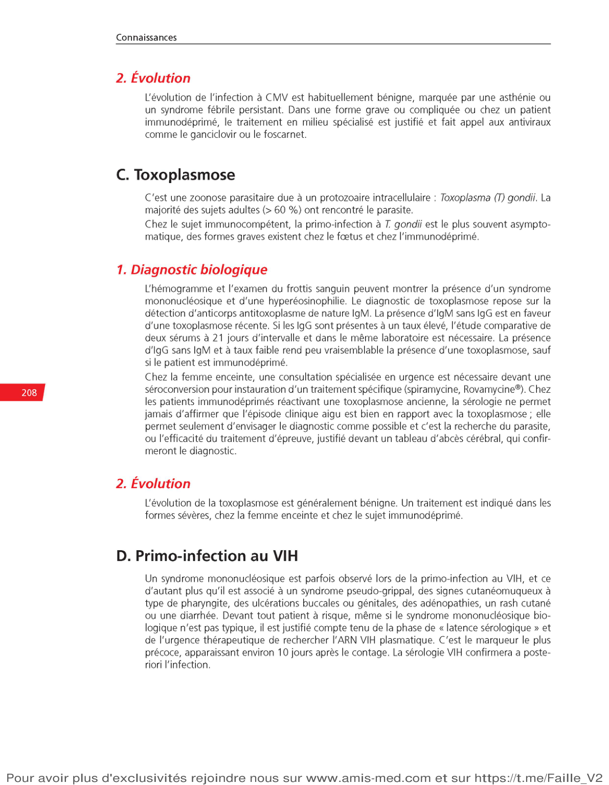

| Agent | Fréquence | Particularité |
|---|---|---|
| EBV (Epstein-Barr Virus) | 50–80 % | MNI classique, MNI-test+, angine |
| CMV (Cytomégalovirus) | 10–20 % | Tableau MNI-like sans angine, MNI-test– |
| VIH (primo-infection) | ≈5 % | 🔴 URGENCE DIAGNOSTIQUE, ulcérations |
| Toxoplasma gondii | ≈5 % | SM "froid", adénopathies cervicales |
| HHV-6, rubéole, hépatites | rares | Contextes spécifiques |
M. L., 19 ans, étudiant. Consulte pour fièvre à 38,8°C depuis 8 jours, asthénie majeure, gorge douloureuse. NFS : GB = 14,2 G/L avec 72 % de lymphocytes dont 22 % de « grandes cellules à cytoplasme bleu foncé » sur le frottis. Pas d'ATCD particulier.
| Examen | Résultat / Interprétation | Utilité |
|---|---|---|
| MNI-test (agglutinines hétérophiles) | Positif si MNI-EBV (> 12 ans) | 1ère intention, rapide, spécifique |
| IgM anti-VCA (antigène capsidique viral) | Positif = infection récente/aiguë | Confirme MNI si MNI-test – |
| IgG anti-VCA | + = contact ancien ou récent | Persiste à vie |
| IgG anti-EBNA (Ag nucléaire) | Positif tardivement (> 3 mois) | + = infection ancienne (guérie) |
| PCR EBV | Charge virale EBV | Immunodéprimé seulement |
Mme C., 22 ans. Fièvre à 39°C depuis 10 jours, angine pseudomembraneuse, adénopathies cervicales postérieures. Son médecin a prescrit de l'amoxicilline il y a 5 jours → apparition d'un rash diffus maculo-papuleux. NFS : GB 18 G/L, lymphocytes 68 %, LHB 25 %, plaquettes 85 G/L. ASAT 4× N, ALAT 3× N. Splénomégalie à 15 cm.

Pr Planès – p.6
| Examen | Résultat | Signification |
|---|---|---|
| IgM anti-CMV+ | Infection récente/aiguë | Primo-infection CMV probable |
| IgG anti-CMV+ (sans IgM) | Infection ancienne | Immunité acquise |
| IgM+ et IgG+ | Primo-infection ou réactivation | Contexte clinique déterminant |
| PCR CMV (charge virale) | Quantitatif | Immunodéprimé +++ ou femme enceinte |

p.7
Mme G., 28 ans, enceinte de 14 semaines (séronégative CMV connue). Elle travaille en crèche. Elle consulte pour fièvre à 38,5°C depuis 5 jours, asthénie, adénopathies cervicales. NFS : GB 12 G/L, 60 % lymphocytes, 15 % LHB sur le frottis. MNI-test NÉGATIF. Pas d'angine.
Syndrome rétroviral aigu — Urgence diagnostique
⚡ Quel signe clinique est quasi-pathognomonique du syndrome rétroviral aigu par rapport à la MNI ?
⚡ Dans quel délai après contamination VIH survient la primo-infection symptomatique ?
⚡ Quelle proportion de primo-infections VIH est symptomatique ?
⚡ Nommez les 3 éléments de la triade clinique du syndrome rétroviral aigu.
⚡ Quel est le comportement des CD4 lors du syndrome rétroviral aigu ?
⚡ La charge virale plasmatique est-elle haute ou basse au pic de la primo-infection VIH ?
⚡ Quelle anomalie de NFS (en dehors du SM) est fréquente au cours du SRA ?
⚡ À partir de quel délai après contamination l'ARN VIH est-il détectable ?
⚡ Quel test est prescrit en première intention pour diagnostiquer une primo-infection VIH ?
⚡ Qu'est-ce que l'Ag p24 et quand devient-il détectable ?
⚡ Que faire si le test combiné est négatif mais la suspicion de primo-VIH est forte ?
⚡ Quel test confirme un ELISA 4G positif ?
⚡ Quel est le schéma standard de traitement d'une primo-infection VIH ?
⚡ Quel est l'objectif virologique du traitement ARV ?
⚡ La primo-infection VIH est-elle soumise à déclaration obligatoire ?
⚡ Quel bénéfice supplémentaire au traitement ARV précoce en termes de santé publique ?
Q1. Quelle est la durée habituelle entre contamination VIH et premiers symptômes du syndrome rétroviral aigu ?
Q2. Lequel de ces signes est quasi-pathognomonique du syndrome rétroviral aigu par rapport à la MNI ?
Q3. Quel est le premier examen biologique à réaliser devant un syndrome mononucléosique sans étiologie évidente chez un adulte jeune ?
Q4. L'antigène p24 est détectable à partir de quel délai après contamination ?
Q5. Quel est le comportement des CD4 lors du syndrome rétroviral aigu ?
Q6. Quel traitement est indiqué dès le diagnostic confirmé de primo-infection VIH ?
Q7. Un test combiné Ag/Ac VIH négatif réalisé 8 jours après un rapport à risque élimine-t-il formellement l'infection ?
Q8. La primo-infection VIH est soumise à :
Q9. Quel est le schéma ARV standard en primo-infection VIH ?
Q10. Quelle complication neurologique grave peut survenir lors d'une primo-infection VIH sévère ?
Situation clinique : Lucas, 26 ans, relations homosexuelles non protégées il y a 3 semaines. Consulte pour fièvre à 39 °C depuis 10 jours, pharyngite, adénopathies cervicales et inguinales, ulcération buccale douloureuse et une ulcération génitale. Rash maculeux du tronc. MNI-test négatif. Sérologie EBV IgM négative.
Quel diagnostic devez-vous évoquer EN PRIORITÉ devant ce tableau clinique ?
Quel est l'examen biologique à demander EN URGENCE ?
Le test combiné revient Ag p24 positif, Ac négatifs (fenêtre sérologique). Que faites-vous ?
Le Western-Blot confirme la primo-infection VIH. Quel traitement initiez-vous ?
Quelles sont les obligations déclaratives dans ce cas ?
Causes rares du SM — Pièges diagnostiques
⚡ Quelle est la voie de transmission de l'hépatite A responsable de SM ?
⚡ Pourquoi la rubéole est-elle une urgence chez la femme enceinte ?
⚡ Quel herpèsvirus est responsable de la roséole infantile ?
⚡ Quel danger représente le parvovirus B19 chez la femme enceinte ?
⚡ Quelle bactérie est responsable d'une listériose à risque de méningite chez l'immunodéprimé ?
⚡ Quel examen systématique devant tout SM avec fièvre au retour des tropiques ?
⚡ Que signifie l'acronyme DRESS ?
⚡ Quel est le traitement du DRESS syndrome ?
⚡ Quel élément de la NFS permet d'orienter vers une LAL plutôt qu'un SM infectieux ?
⚡ Quelle est la cellule diagnostique du lymphome de Hodgkin à la biopsie ganglionnaire ?
⚡ Quels sont les 3 signes B du lymphome de Hodgkin ?
⚡ Quelle différence entre les LHB du SM infectieux et les lymphocytes de la LLC ?
⚡ Quel test biologique doit être systématique devant tout SM sans étiologie évidente ?
⚡ Quelle urgence diagnostique doit être éliminée devant tout SM fébrile au retour des tropiques ?
⚡ Quelle anomalie hématologique impose un myélogramme urgent devant un SM ?
⚡ Devant un SM chez une femme enceinte, quelles sérologies demander en urgence ?
Q1. Un patient présente un SM après retour du Mali. Quel examen est IMPÉRATIF en urgence ?
Q2. Un SM avec hyperéosinophilie et atteinte viscérale après introduction d'allopurinol évoque :
Q3. La cellule caractéristique du lymphome de Hodgkin est :
Q4. Un SM avec blastes > 20 % à la NFS chez un adolescent oriente vers :
Q5. Quel aliment est la principale source de contamination par Listeria monocytogenes ?
Q6. La brucellose est diagnostiquée par :
Q7. Les signes B d'un lymphome incluent :
Q8. L'hépatite A peut provoquer un syndrome mononucléosique. Sa transmission est :
Q9. Quelle différence morphologique entre les LHB du SM infectieux et les lymphocytes de la LLC ?
Q10. Quel agent parasitaire peut provoquer un hydrops fœtalis en cas de primo-infection pendant la grossesse ?
Situation clinique : Martine, 32 ans, enceinte de 14 semaines (SA), travaille en crèche. Consulte pour fièvre à 38,5 °C, asthénie, adénopathies cervicales, SM sur NFS. Statut sérologique inconnu pour toxo, CMV, rubéole. MNI-test négatif. Test VIH négatif.
Quelle est la principale préoccupation devant ce tableau chez une femme enceinte travaillant en crèche ?
Quelles sérologies prescrivez-vous en urgence ?
Que signifie CMV IgM+ / IgG- chez cette femme enceinte ?
Quelle est la prise en charge immédiate ?
Quels conseils de prévention donner à Martine pour les prochaines grossesses ?
Item 217 — ECNi / R2C
MédECN — Hématologie